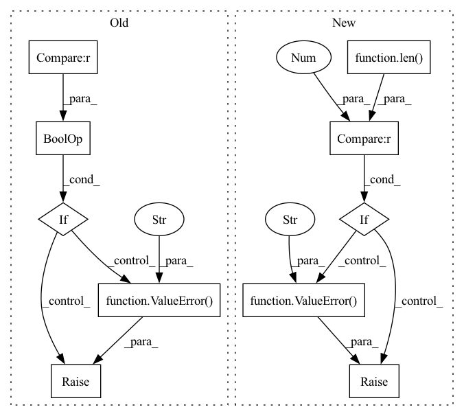

Pattern ID :40664

Before Change
raise ValueError(f"{metric_with_utils.log_name} must compute number value, "
f"not numpy array with shape {metric_value.shape}.")
// If it numpy array with one element but wrong dtype
if isinstance(metric_value, np.ndarray) and len(metric_value.shape) == 0 and\
np.issubdtype(metric_value.dtype, np.number):
raise ValueError(f"{metric_with_utils.log_name} must compute number value, "
f"not numpy array element with dtype {metric_value.dtype}.")
is_number = isinstance(metric_value, numbers.Number)
// If not numeric type.
if not (is_number or isinstance(metric_value, Tensor) or isinstance(metric_value, np.ndarray)):
After Change
if self.is_number(metric_value_d):
metric_value[f"{phase.value}/{metric_with_utils.log_name}_{metric_name_d}"] = metric_value_d
// If there is no numeric value
if len(metric_value) == 0:
raise ValueError(f"Metric manager on_epoch_end method. Metric {metric_with_utils.log_name}"
f"return dict with has no numeric values.")
log.update(metric_value)
elif self.is_number(metric_value):
metric_key = f"{phase.value}/{metric_with_utils.log_name}"
log[metric_key] = metric_value
In pattern: SUPERPATTERN
Frequency: 3
Non-data size: 10
Instances
Fragment ID: 114953402
Project Name: eora-ai/torchok
Commit Name: c2fc24fbea4374c237f2164b01b38d617ba7b685
Time: 2022-09-01
Author: Sitcebelly
File Name: torchok/metrics/metrics_manager.py
M Class Name: MetricsManager
N Class Name: MetricsManager
M Method Name: on_epoch_end(2)
N Method Name: on_epoch_end(2)
M Parent Class: nn.Module
N Parent Class: nn.Module
M File Name: torchok/metrics/metrics_manager.py
N File Name: torchok/metrics/metrics_manager.py
M Start Line: 125
M End Line: 147
N Start Line: 132
N End Line: 151
'>
Before Change
else:
task_cfg = copy.deepcopy(config)
if "hydra" in task_cfg and hydra_overrides:
raise ValueError(
"`hydra_overrides` cannot be specified when `config` is already derived from a HydraConfig"
)
if config_dir is not None:
config_dir = str(Path(config_dir).absolute())
search_path = create_config_search_path(config_dir)
After Change
config_name = _store_config(config, config_name)
task_cfg = _load_config(config_name=config_name, overrides=overrides)
else:
if len(overrides) > 0:
raise ValueError(
"Non-empty overrides provided with full config object already provided, did you mean `multirun_overrides`?"
)
task_cfg = copy.deepcopy(config)
if config_dir is not None:
config_dir = str(Path(config_dir).absolute())
'>
Fragment ID: 114953406
Project Name: mit-ll-responsible-ai/hydra-zen
Commit Name: 14fe02bc8490312762d6c897c7697b8a7f67a9ad
Time: 2021-04-06
Author: jgoodwin@ll.mit.edu
File Name: src/hydra_utils/experimental/_implementations.py
M Class Name: AnonimousClass
N Class Name: AnonimousClass
M Method Name: hydra_launch(7)
N Method Name: hydra_launch(6)
M Parent Class:
N Parent Class:
M File Name: src/hydra_utils/experimental/_implementations.py
N File Name: src/hydra_utils/experimental/_implementations.py
M Start Line: 207
M End Line: 234
N Start Line: 91
N End Line: 203
'>
Before Change
distributed = distributed or _core.DummyDistributed()
naddrs = len(info.container_addrs)
if naddrs > 1 and isinstance(distributed, _core.DummyDistributed):
raise ValueError("you must provide a valid DistributedContext for a multi-container task")
preemption = _core.Preemption(session, info.allocation_id, distributed)
// At present, we only support tensorboards in Trial tasks.
After Change
session = Session(info.master_url, None, None, cert)
if distributed is None:
if len(info.container_addrs) > 1 or len(info.slot_ids) > 1:
raise ValueError("you must provide a valid DistributedContext for a multi-slot task")
distributed = distributed or _core.DummyDistributed()
preemption = _core.Preemption(session, info.allocation_id, distributed)
'>
Fragment ID: 114953392
Project Name: determined-ai/determined
Commit Name: 9ff7aa86d5a3ac4d25438e6d7763292d7e493206
Time: 2022-04-05
Author: rb@hpe.com
File Name: harness/determined/_core/_context.py
M Class Name: AnonimousClass
N Class Name: AnonimousClass
M Method Name: init(0)
N Method Name: init(0)
M Parent Class:
N Parent Class:
M File Name: harness/determined/_core/_context.py
N File Name: harness/determined/_core/_context.py
M Start Line: 98
M End Line: 104
N Start Line: 90
N End Line: 102